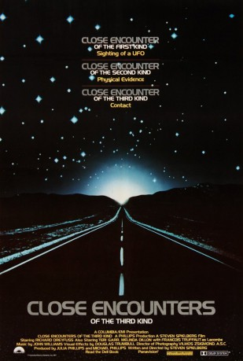
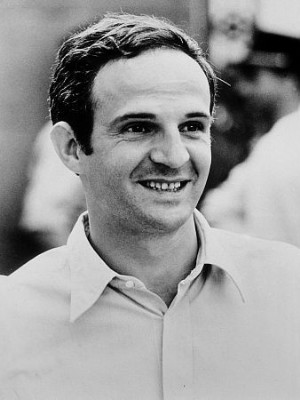
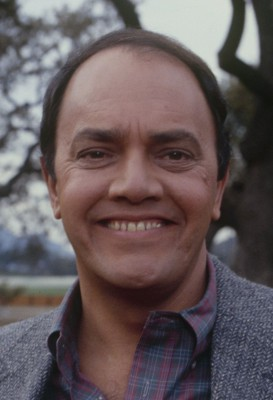
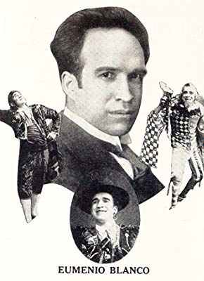

#4977 Die Unheimliche Begegnung der 3. Art
Alternativ: Close Encounters of the Third Kind
Auszeichnungen: 2 Oscars gewonnen für 7 Oscars nominiert 1 BAFTA-Awards gewonnen
 
 IMDB-Wertung: 7.7 / 10
IMDB-Wertung: 7.7 / 10  Metascore: 0
Metascore: 0 
Two parallel stories are told. In the first, a group of research scientists from a variety of backgrounds are investigating the strange appearance of items in remote locations, primarily desert regions. In continuing their investigation, one of the lead scientists, a Frenchman named Claude Lacombe, incorporates the Kodály method of music education as a means of communication in their work. The response, in turn, at first baffles the researchers, until American cartographer David Laughlin deciphers the meaning of the response. In the second, electric company lineman and family man Roy Neary and single mother Jillian Guiler are among some individuals in Muncie, Indiana who experience some paranormal activity before some flashes of bright lights in the sky, which they believe to be a UFO. Roy becomes obsessed with what he saw, unlike some others, especially in some form of authority, who refuse to acknowledge their belief that it was a UFO in not wanting to appear crazy. That obsession ...
Jahr: 1977
Dauer: 134 Minuten
FSK: 12
Land: USA Studio: Columbia PicturesTonspuren:
Untertitel:
Auflösung: 720p (1280x544) Größe: 6553 MB
Genre: Drama, Sci-Fi
Regisseur:  Steven Spielberg
Steven Spielberg
Drehbuch: Shane Abbess
Soundtrack:
Darsteller:
 Richard Dreyfuss als Roy Neary
Richard Dreyfuss als Roy Neary-  François Truffaut als Claude Lacombe
 Teri Garr als Ronnie Neary
Teri Garr als Ronnie Neary Melinda Dillon als Jillian Guiler
Melinda Dillon als Jillian Guiler Bob Balaban als David Laughlin
Bob Balaban als David Laughlin J. Patrick McNamara als Project Leader
J. Patrick McNamara als Project Leader Roberts Blossom als Farmer
Roberts Blossom als Farmer- Cary Guffey als Barry Guiler
 Lance Henriksen als Robert
Lance Henriksen als Robert- Merrill Connally als Team Leader
-  George DiCenzo als Major Benchley
- Norman Bartold als Ohio Tolls
 Josef Sommer als Larry Butler
Josef Sommer als Larry Butler Carl Weathers als Military Police
Carl Weathers als Military Police- Gene Rader als Hawker
 James Keane als Radio Telescope Team
James Keane als Radio Telescope Team John Dennis Johnston als Special Forces
John Dennis Johnston als Special Forces Bennett Wayne Dean Sr. als Scientist , uncredited
Bennett Wayne Dean Sr. als Scientist , uncredited Basil Hoffman als Longly , uncredited
Basil Hoffman als Longly , uncredited- Stephen Powers als UN Observer , uncredited
- Howard K. Smith als Howard K. Smith , uncredited
- Warren J. Kemmerling als Wild Bill
- Philip Dodds als Jean Claude
- Shawn Bishop als Brad Neary
- Adrienne Campbell als Silvia Neary
- Justin Dreyfuss als Toby Neary
- Amy Douglass als Implantee
- Alexander Lockwood als Implantee
- Gene Dynarski als Ike
- Mary Gafrey als Mrs. Harris
- Michael J. Dyer als Himself
- Roger Ernest als Highway Patrolman
- F.J. O'Neil als ARP Project Member
- Phil Dodds als ARP Musician
- Randy Hermann als Returnee #1 Flt. 19
- Hal Barwood als Returnee #2 Flt. 19
- Matthew Robbins als Returnee #3 Flt. 19
- David Anderson als Air Traffic Controller
- Richard L. Hawkins als Air Traffic Controller
- Craig Shreeve als Air Traffic
 Bill Thurman als Air Traffic
Bill Thurman als Air Traffic- Roy E. Richards als Air East Pilot
-  Eumenio Blanco als Federale
- Daniel Núñez als Federale
- Chuy Franco als Federale
 Luis Contreras als Federale
Luis Contreras als Federale- Dennis McMullen als Radio Telescope Team
- Cy Young als Radio Telescope Team
- Tom Howard als Radio Telescope Team
- Richard Stuart als Truck Dispatcher
Datei: X:\1977\Unheimliche Begegnung der 3. Art, Die (1977, FSK12, 1280x544).mkv seit 06.12.2016
Festplatte: HD 1971-1979
 Es gibt insgesamt 33 Filme in der Gruppe '1977'
Es gibt insgesamt 33 Filme in der Gruppe '1977'